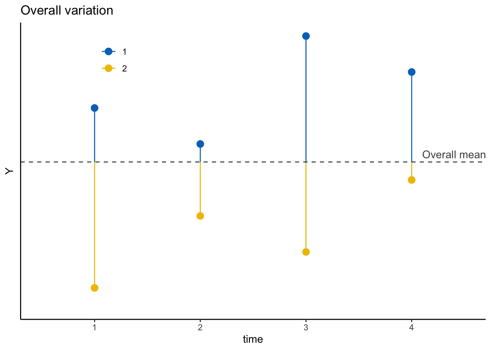
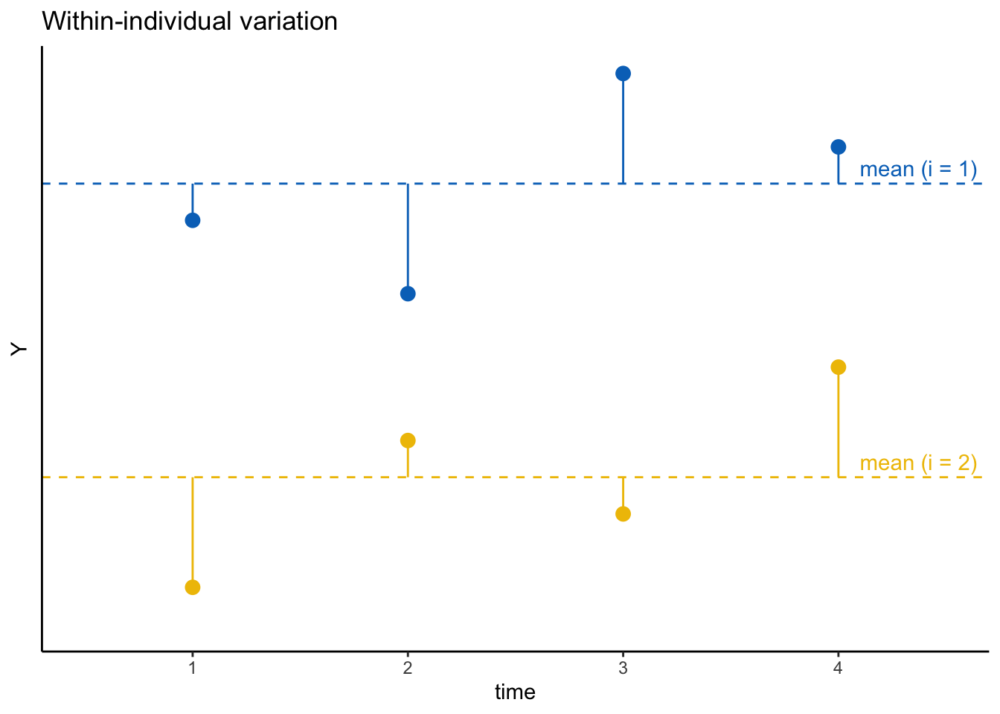
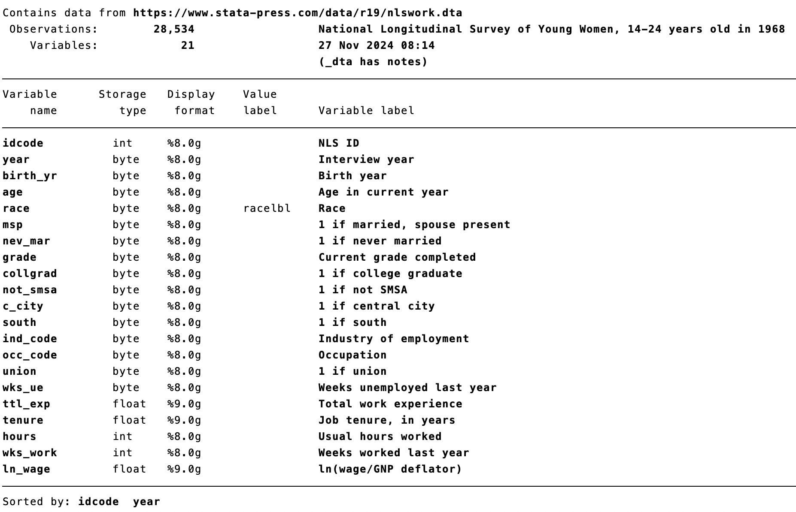

Chapter 11 パネルデータ分析（作成中）
この章は現在作成中です（2025-12-01）
本章では、パネルデータ分析の基礎について説明する。
内容に入る前に、右上のプロジェクトのボックスの横が、前章で作成したプロジェクトの名前（たとえば、seminar_sociology_r）になっているかどうかを確認しておこう。なっていない場合は、右上のボックスをクリックして、「Open Project…」を選択し、前章で作成したRprojファイル（たとえば、seminar_sociology_r.Rprojといったような名前になっている）を選んで、プロジェクトを切り替えよう。
この章では以下のパッケージを使用する。そのほか使用するパッケージについては後ほど紹介する。
11.1 パネルデータの基本的特徴
11.1.1 パネルデータとは
同じ個人を複数の時点で観察したデータを指してパネルデータとよぶ。たとえば、同一の個人に対して同一の項目を尋ねる調査を複数時点にわたって繰り返し尋ねると、同一個人のとる値が時点間でどのように変化していくのかを明らかにすることができる。パネルデータを用いることによって、個人の変化、あるいは変化の効果を明らかにすることができる。
パネルデータにおける単位は「個人×時点」となる。同一個人でも、2020年、2021年、2022年……、というふうに異なる値を取ることになる。個人の人数を\(N\)、時点の数を\(T\)とすれば、個人×時点の個数は\(NT\)となる。すべての個人に対して\(T\)回のデータが存在している場合のパネルデータのことをバランスドパネルデータ balanced panel dataといい、個人によってデータの個数が異なっているパネルデータのことをアンバランスドパネルデータという。社会調査では未回答などが多く発生するため、ほとんどの場合はアンバランスドパネルデータである。
もちろん、単位は個人ではなく、学校、企業、都道府県、等々の場合もありうる。その場合でも、下記のパネルデータの考え方はまったく同じように適用することができる。
11.1.2 wide形式とlong形式
パネルデータを記録する場合の形式として、wide形式とlong形式という2つの形式がある。
wide形式では、1つの行が1つの個人を表し、各時点の観察値が別々の列に格納される。たとえば、4回の調査を行って、N人の個人から、賃金（時給）に関するデータを繰り返し集めたとしよう。このようにして賃金にそれぞれwage1, wage2, wage3, wage4という名前をつけて、下記のように記録したとする。
| id | birthyear | wage1 | wage2 | wage3 | wage4 |
|---|---|---|---|---|---|
| 1 | 1980 | 1200 | 1250 | 1260 | 1300 |
| 2 | 1966 | 2000 | 2300 | 1600 | NA |
| 3 | 2005 | 1100 | NA | NA | NA |
| … | |||||
| N | 1992 | 3000 | 3000 | 3000 | 3300 |
idは個々人に付与されるID、birthyearは出生年を表す。たとえばid = 1の個人は1980年生まれで、1回目の調査では時給1200円、2回目の調査では時給1250円、3回目の調査では時給1260円、4回目の調査では時給1300円である。
なお、調査によって回答を収集する場合、一度回答してくれた人がその後もずっと調査に回答してくれるとは限らない。たとえばid = 2の個人は1966年生まれで、1, 2, 3回目の調査には回答してくれたが、4回目の調査には回答せず、したがって4回目調査時点の時給はわからない。同じように、id = 3の個人は2005年生まれで、1回目の調査では回答したものの、その後は回答が得られなかった。
このように1つの行が1つの個人を表すwide形式に対して、long形式は、1つの行が1回分の観察（observation）を表す。先ほどのデータをlong形式に変換した場合には、次のようになる。
| id | time | birthyear | wage |
|---|---|---|---|
| 1 | 1 | 1980 | 1200 |
| 1 | 2 | 1980 | 1250 |
| 1 | 3 | 1980 | 1260 |
| 1 | 4 | 1980 | 1300 |
| 2 | 1 | 1966 | 2000 |
| 2 | 2 | 1966 | 2300 |
| 2 | 3 | 1966 | 1600 |
| 3 | 1 | 2005 | 1100 |
| … | |||
| N | 1 | 1992 | 3000 |
| N | 2 | 1992 | 3000 |
| N | 3 | 1992 | 3000 |
| N | 4 | 1992 | 3300 |
timeは調査回を表す変数である。たとえばID = 1の個人のtime = 1時点の時給は1200円、time = 2時点の時給は1250円、といった具合である。先ほどとは異なり、回答回数に応じて同一個人が複数回データに現れるという構造となっている。つまり、1つの行は1つの回答（観察）になっているということである。
観察回数が少ない個人はそれだけデータに現れる行数も少なくなる。たとえばid = 2の個人は3回分の回答しか得られていないため、long形式データでは3行だけ現れることになるし、id = 3の個人は1行だけ現れることになる。個人によって観察回数が異なるので、このデータはアンバランスドパネルデータである。
パネルデータ分析を行う場合には、ほとんどの場合、long形式のデータを用いることになる。したがって、もし分析に使用するデータがlong形式となっていなかった場合には、long形式のデータを自身で準備する必要がある。
11.1.3 時間可変と時間不変
先ほどの例でみた賃金のように、時点によって値が変化する変数のことを時間可変（time-varying）の変数（または時変の変数）という。他方、出生年のように、時点によって値が変化しない変数のことを時間不変（time-invariant）の変数（または時不変の変数）という。
調査の行われ方によって、何が時間可変で何が時間不変かは変わってくる。たとえば最終学歴の場合、10代や20代の人を調査している場合にはより上の段階の学校に通うことで最終学歴が変化しうるため、最終学歴は時間可変の変数となりうる。一方、（日本の場合）30–50代で再度学校に通うことはあまり多くないため、最終学歴は時間不変の変数となりうる。また、本質的には時間可変であったとしても、調査で繰り返し尋ねられていない（たとえば最初の調査でのみ学歴を尋ね、それ以降の調査では尋ねない）場合には学歴の変化を捕捉できず、したがって時間不変とせざるを得ない場合もある。
11.1.4 個人内変動と個人間変動
個人\(i\)の時点\(t\)におけるある変数\(Y\)の値を\(Y_{it}\)と書くこととする。上記の賃金の例であれば、ID = 1のtime = 1における賃金の値は\(Y_{1, 1} = 1200\)というふうに表すことができる。
時間可変の変数の場合、その変動（variation）を個人内変動（within-individual variation）と個人間変動（between-individual variation）に分けることができる。たとえば、4時点の調査を行い、各個人について計4回分の\(Y_{it}\)の値を得られたとしよう。このとき、2人の個人（1, 2）について得られた値（値は架空のもの）をプロットしたのが次の図である。縦軸が\(Y\)の値、横軸が時点\(t\)を表す。

ここで\(Y_{it}\)は、図中に示した全体平均（灰色の点線。この値を\(\overline{Y}\)とする）と、そこからの残差（青色または黄色の値の実線。この値を\(e_{it}\)とする）の和として表すことができる。
\[ Y_{it} = \overline{Y} + e_{it} \]
上記に示した残差\(e_{it}\)の部分は、個人間変動と個人内変動にさらに分割することができる。具体的には、同一個人内で\(Y_{it}\)の平均をとった値、すなわち個人内平均（この値を\(\overline{Y}_i\)とする）と全体平均との差、そして各観察と個人内平均との差である。
\[ \begin{align} Y_{it} &= \overline{Y} + e_{it} \\ &= \overline{Y} + Y_{it} - \overline{Y} \\ &= \overline{Y} + \underbrace{\left(\overline{Y}_i - \overline{Y}\right)}_{個人間変動} + \underbrace{\left(Y_{it} - \overline{Y}_i \right)}_{個人内変動} \\ &= \overline{Y} + \underbrace{u_i}_{個人間変動} + \underbrace{\varepsilon_{it}}_{個人内変動} \end{align} \]
個人間変動は次の図のように、全体平均からの個人内平均のずれに対応する。

個人内変動は次の図のように、個人内平均からの各観察の値のずれに対応する。

パネルデータがあれば、2時点以上の観察を得られている個人について、その時間可変の変数の値のばらつきを個人間変動によるものと個人内変動によるものとに分割することができる。とりわけ、個人内変動に着目することによって、同じ個人の変数の値が高くなったり低くなったりするのはどのような要因によるのかを分析することができる。
1時点の観察しか得られていない場合、仮に理論上は時間可変の変数であったとしても、変数のばらつきが個人間変動によるものなのか、個人内変動によるものなのかを区別することはできない。この場合の図は次のようになり、各観察の値と個人内平均は完全に一致してしまう（\(Y_{it} = \overline{Y}_i\)）。そのため、個人間変動と個人内変動を分けることができない。

時間不変の変数については個人内変動が0となるため、やはり個人内変動と個人間変動を分けることはできない。
11.2 パネルデータの特徴記述
11.2.1 サンプルデータ
これ以降は、アメリカ労働統計局が実施しているNational Longitudinal Survey of Youth（NLSY）のデモデータ（統計ソフトStataのサンプルデータとしてよく使われる）を利用する。このデータには、1969年時点で14歳から26歳の女性が含まれている。
## Rows: 28,534
## Columns: 21
## $ idcode <dbl> 1, 1, 1, 1, 1, 1, 1, 1, 1, 1, 1, 1, 2, 2, 2, 2, 2, 2, 2, 2, 2…
## $ year <dbl> 70, 71, 72, 73, 75, 77, 78, 80, 83, 85, 87, 88, 71, 72, 73, 7…
## $ birth_yr <dbl> 51, 51, 51, 51, 51, 51, 51, 51, 51, 51, 51, 51, 51, 51, 51, 5…
## $ age <dbl> 18, 19, 20, 21, 23, 25, 26, 28, 31, 33, 35, 37, 19, 20, 21, 2…
## $ race <dbl> 2, 2, 2, 2, 2, 2, 2, 2, 2, 2, 2, 2, 2, 2, 2, 2, 2, 2, 2, 2, 2…
## $ msp <dbl> 0, 1, 1, 1, 1, 0, 0, 0, 0, 0, 0, 0, 1, 1, 1, 1, 1, 1, 1, 1, 1…
## $ nev_mar <dbl> 1, 0, 0, 0, 0, 0, 0, 0, 0, 0, 0, 0, 0, 0, 0, 0, 0, 0, 0, 0, 0…
## $ grade <dbl> 12, 12, 12, 12, 12, 12, 12, 12, 12, 12, 12, 12, 12, 12, 12, 1…
## $ collgrad <dbl> 0, 0, 0, 0, 0, 0, 0, 0, 0, 0, 0, 0, 0, 0, 0, 0, 0, 0, 0, 0, 0…
## $ not_smsa <dbl> 0, 0, 0, 0, 0, 0, 0, 0, 0, 0, 0, 0, 0, 0, 0, 0, 0, 0, 0, 0, 0…
## $ c_city <dbl> 1, 1, 1, 1, 1, 1, 1, 1, 1, 1, 0, 0, 1, 1, 1, 1, 1, 1, 1, 1, 1…
## $ south <dbl> 0, 0, 0, 0, 0, 0, 0, 0, 0, 0, 0, 0, 0, 0, 0, 0, 0, 0, 0, 0, 0…
## $ ind_code <dbl> 6, 4, 4, 4, 5, 12, 5, 5, 5, 5, 5, 5, 4, 4, 4, 4, 4, 4, 4, 4, …
## $ occ_code <dbl> 3, 6, 6, 6, 6, 8, 6, 6, 6, 6, 6, 6, 3, 3, 6, 6, 6, 6, 6, 6, 6…
## $ union <dbl> NA, NA, 1, NA, NA, 0, NA, 1, 1, 1, 1, 1, 0, NA, NA, NA, 1, 1,…
## $ wks_ue <dbl> 2, 22, 0, 0, 0, 0, 7, 0, NA, 0, 0, 0, 19, 6, 35, 0, 0, 0, NA,…
## $ ttl_exp <dbl> 1.0833333, 1.2756410, 2.2564101, 2.3141024, 2.7756410, 3.7756…
## $ tenure <dbl> 0.08333334, 0.08333334, 0.91666669, 0.08333334, 0.16666667, 1…
## $ hours <dbl> 20, 44, 40, 40, 10, 32, 52, 45, 49, 42, 45, 48, 40, 40, 40, 4…
## $ wks_work <dbl> 27, 10, 51, 3, 24, 52, 4, 75, 101, 97, 95, 70, 13, 22, 17, 39…
## $ ln_wage <dbl> 1.451214, 1.028620, 1.589977, 1.780273, 1.777012, 1.778681, 2…各変数が指す内容は以下のとおりである（Stataで開いて見たものをスクリーンショットを撮って載せたものである）：

このデータを使って、労働組合への加入は賃金を高める効果を持つのかについて分析する。下記とおり分析用のデータを作成する。
nls_sample <- nls %>%
select(
id = idcode, # 個人を表すid。idcodeという名前をidという名前に変更
year, # 調査年
age, # 年齢
ln_wage, # 対数賃金
race, # 人種。1はWhite, 2はBlack, 3はOther
collgrad, # 大学卒であれば1、それ以外であれば0を取る変数
occ_code, # 就いている職業を表す数値
ind_code, # 就いている産業を表す数値
union, # 労働組合に加入していれば1、それ以外であれば0を取る変数
msp # 結婚していれば1, それ以外であれば0を取る変数
) %>%
mutate(race = factor(race,
levels = 1:3,
labels = c("White", "Black", "Other"))) %>% # raceにラベルを付与
na.omit() # 用いる変数に欠損があるデータを除外パネルデータを分析したり特徴を記述したりする場合に便利なコードをいくつか紹介する。
11.2.2 データを昇順または降順に並べ替える：arrange()
arrange()関数を使うと、指定した変数にもとづいてデータを昇順（値が小さいのものを先にする）または降順（値が大きいものを先にする）に並べ替えることができる。たとえば、nls_sampleデータを個人を表すid変数、時間を表すyear変数で昇順に並べ替えるには、次のようにする。
## # A tibble: 20 × 10
## id year age ln_wage race collgrad occ_code ind_code union msp
## <dbl> <dbl> <dbl> <dbl> <fct> <dbl> <dbl> <dbl> <dbl> <dbl>
## 1 1 72 20 1.59 Black 0 6 4 1 1
## 2 1 77 25 1.78 Black 0 8 12 0 0
## 3 1 80 28 2.55 Black 0 6 5 1 0
## 4 1 83 31 2.42 Black 0 6 5 1 0
## 5 1 85 33 2.61 Black 0 6 5 1 0
## 6 1 87 35 2.54 Black 0 6 5 1 0
## 7 1 88 37 2.46 Black 0 6 5 1 0
## 8 2 71 19 1.36 Black 0 3 4 0 1
## 9 2 77 25 1.73 Black 0 6 4 1 1
## 10 2 78 26 1.69 Black 0 6 4 1 1
## 11 2 80 28 1.73 Black 0 6 4 1 1
## 12 2 82 30 1.81 Black 0 6 4 1 1
## 13 2 83 31 1.86 Black 0 6 4 1 1
## 14 2 85 33 1.79 Black 0 6 4 1 0
## 15 2 87 35 1.85 Black 0 6 4 1 0
## 16 2 88 37 1.86 Black 0 5 4 1 0
## 17 3 71 25 1.55 Black 0 3 4 0 0
## 18 3 72 26 1.61 Black 0 3 4 0 0
## 19 3 73 27 1.60 Black 0 3 4 0 0
## 20 3 77 31 1.62 Black 0 3 4 0 0このようにデータを並べ替えておくと、各個人の値がどのように推移していくのかや、時間によって変化する変数を適切に作成できているかをチェックするのに役立つ。
yearとidの順序を逆にすると、まずyearの昇順に並べ替え、同一year内でidの昇順に並べ替える。
## # A tibble: 10 × 10
## id year age ln_wage race collgrad occ_code ind_code union msp
## <dbl> <dbl> <dbl> <dbl> <fct> <dbl> <dbl> <dbl> <dbl> <dbl>
## 1 4 70 24 2.29 White 1 13 11 1 0
## 2 5 70 24 1.82 White 0 3 7 0 0
## 3 7 70 21 1.54 White 0 3 4 0 1
## 4 9 70 18 1.47 White 0 3 5 1 0
## 5 10 70 18 1.46 White 0 6 4 0 0
## 6 16 70 21 2.04 White 0 1 11 0 0
## 7 17 70 21 2.00 White 1 1 11 0 0
## 8 19 70 21 2.02 White 0 1 11 0 0
## 9 20 70 21 2.02 White 0 1 11 0 0
## 10 22 70 22 1.97 White 0 1 11 0 0並べ替える変数の前に-をつけると、その変数で降順に並べ替えることができる。
## # A tibble: 10 × 10
## id year age ln_wage race collgrad occ_code ind_code union msp
## <dbl> <dbl> <dbl> <dbl> <fct> <dbl> <dbl> <dbl> <dbl> <dbl>
## 1 5159 77 32 1.57 Black 0 3 11 0 1
## 2 5159 78 33 1.75 Black 0 3 11 1 1
## 3 5159 80 35 1.78 Black 0 3 11 1 0
## 4 5159 82 37 1.87 Black 0 3 11 0 0
## 5 5159 83 38 1.84 Black 0 3 11 1 0
## 6 5159 85 40 1.80 Black 0 3 11 1 0
## 7 5159 88 43 1.97 Black 0 3 11 1 0
## 8 5157 73 23 1.17 Black 0 6 4 0 1
## 9 5157 77 27 1.14 Black 0 8 11 0 1
## 10 5157 80 30 0.867 Black 0 8 11 0 111.2.3 上の行、下の行の値をコピーする：lag() lead()
パネルデータ分析では、ある変数の1時点前の値や1時点後の値を変数として使用することがある。このような場合には、lag()関数やlead()関数を使う。
lag()関数は任意の行数上の値をコピーする（ラグ）。たとえばxという変数の1行上の値をコピーするにはlag(x, n = 1)とする。lead()関数は任意の行数下の値をコピーする（リード）。たとえばxという変数の1行下の値をコピーするにはlead(x, n = 1)とする。
パネルデータの場合、あらかじめ同一個人内で時点の昇順にデータを並べ替えておいた上でlag()関数やlead()関数を使う必要がある。そうでなければ、意図した値とは異なる値をコピーしてきてしまうからである。たとえば、対数賃金ln_wageの1時点前の値、1時点後の値をコピーした新たな変数を作りたいとする。この場合には次のようにする。
nls_sample <- nls_sample %>%
arrange(id, year) %>%
group_by(id) %>% # idごとにデータをグループ化
mutate(
ln_wage_lag = lag(ln_wage, n = 1), # 1時点前のln_wageをコピー
ln_wage_lead = lead(ln_wage, n = 1) # 1時点後のln_wageをコピー
) %>%
ungroup() # グループ化を解除
## 作成した変数を確認
nls_sample %>%
select(id, year, ln_wage, ln_wage_lag, ln_wage_lead) %>%
head(n = 30)## # A tibble: 30 × 5
## id year ln_wage ln_wage_lag ln_wage_lead
## <dbl> <dbl> <dbl> <dbl> <dbl>
## 1 1 72 1.59 NA 1.78
## 2 1 77 1.78 1.59 2.55
## 3 1 80 2.55 1.78 2.42
## 4 1 83 2.42 2.55 2.61
## 5 1 85 2.61 2.42 2.54
## 6 1 87 2.54 2.61 2.46
## 7 1 88 2.46 2.54 NA
## 8 2 71 1.36 NA 1.73
## 9 2 77 1.73 1.36 1.69
## 10 2 78 1.69 1.73 1.73
## # ℹ 20 more rowsなお、隣接するデータの間の時点がずれている場合には解釈が難しくなる点に注意したい。たとえば上記のid1の個人の回答は、72年、77年、80年、83年、85年、87年、88年……というふうに、時点が等間隔に並んでいない。このような場合、「1時点前」の指す時点が必ずしも同じではないという問題が生じる。ラグ変数やリード変数を作成する場合には、回答が等間隔に並んでいるかどうかを確認しておくのがよいだろう。
11.2.4 パネルデータ特有の記述統計量：xtsum
ある変数\(Y_{it}\)の全体平均からのばらつきは次のように個人間変動による部分と個人内変動による部分に分けることができる。
\[ \underbrace{Y_{it} - \overline{Y}}_{総変動} = \underbrace{\left(\overline{Y}_i - \overline{Y}\right)}_{個人間変動} + \underbrace{\left(Y_{it} - \overline{Y}_i \right)}_{個人内変動} \] それぞれの要素について、次のとおり総分散、個人間変動、個人内変動を定義できる。
総分散（overall variance）： \[ s^2_{overall} = \frac{1}{NT - 1}\sum_i\sum_t(Y_{it} - \overline{Y})^2 \] 個人間分散（between variance） \[ s^2_{between} = \frac{1}{N - 1} \sum_i (\overline{Y}_i - \overline{Y})^2 \]
個人内分散（within variance）： \[ s^2_{within} = \frac{1}{NT - 1}\sum_i\sum_t(x_{it} - \overline{x}_i)^2 \]
個人によって観察数が異なるアンバランスドデータでは、\(NT\)と観察数の総数は一致しない。この場合には、\(NT\)の代わりに実際の観察数の総数（\(\sum_iT_i\)）を用いる必要がある。この場合は、\(s^2_{overall}\)と\(s^2_{between} + s^2_{within}\)は必ずしも同じ値とはならない。
Rで各変数の総分散（標準偏差）、個人間分散（標準偏差）、個人内分散（標準偏差）をそれぞれ計算してくれるパッケージとして、Stataのxtsum関数を模して作られたxtsumパッケージがある。まずはxtsumパッケージをインストールする。
次に、xtsumパッケージを読み込み、xtsum()関数を使って計算する。id引数で個人を表す変数、t引数で時間を表す変数を指定する。
nls_sample %>%
select(id, year, ln_wage, union, age, msp, collgrad, race) %>% # 分布をみたい変数を選択
xtsum(id = "id", t = "year") # 個人を表す変数（id）と時間を表す変数（t）を指定| Variable | Dim | Mean | SD | Min | Max | Observations |
|---|---|---|---|---|---|---|
| ___________ | _________ | |||||
| ln_wage | overall | 1.755 | 0.468 | 0 | 5.264 | N = 19077 |
| between | 0.433 | 0 | 3.624 | n = 4134 | ||
| within | 0.244 | -0.114 | 4.679 | T = 4.615 | ||
| ___________ | _________ | |||||
| union | overall | 0.234 | 0.424 | 0 | 1 | N = 19077 |
| between | 0.335 | 0 | 1 | n = 4134 | ||
| within | 0.267 | -0.682 | 1.151 | T = 4.615 | ||
| ___________ | _________ | |||||
| age | overall | 31.361 | 6.187 | 16 | 46 | N = 19077 |
| between | 5.155 | 18 | 45 | n = 4134 | ||
| within | 4.545 | 18.611 | 44.561 | T = 4.615 | ||
| ___________ | _________ | |||||
| msp | overall | 0.62 | 0.485 | 0 | 1 | N = 19077 |
| between | 0.416 | 0 | 1 | n = 4134 | ||
| within | 0.288 | -0.297 | 1.536 | T = 4.615 | ||
| ___________ | _________ | |||||
| collgrad | overall | 0.195 | 0.397 | 0 | 1 | N = 19077 |
| between | 0.414 | 0 | 1 | n = 4134 | ||
| within | 0 | 0.195 | 0.195 | T = 4.615 |
- overallの行には、平均値（\(\overline{Y}\)）、総標準偏差\(s_{overall}\)（総分散の平方根）、\(Y_{it}\)の最小値、最大値が示されている。
- betweenの行には、個人間標準偏差\(s_{between}\)（個人間分散の平方根）、\(\overline{Y}_i\)の最小値、最大値が示されている。
- withinの行には、個人内標準偏差\(s_{within}\)（個人内分散の平方根）、\(Y_{it} - \overline{Y}_i + \overline{Y}\)の最小値、最大値が示されている。
- Observationsの列には、上から順に観察数（N）、個人数（n）、平均時点数（T = n/N）がそれぞれ示されている。
- 時間不変の変数は個人内標準偏差（個人内分散）は0となる。たとえばcollgradの結果をみると、SDの列が0となっている。すなわち、個人内でまったく変動していない（常に同じ値になる）ということである。
なお、factor変数（今回の場合はrace）については計算結果は表示されない。
11.3 Pooled OLS
パネルデータを用いて通常の線形回帰モデルを推定することを指して、プールドOLS（Pooled OLS）とよぶ。具体的には下記のように、独立変数に時間可変の変数、または時間不変の変数を含めるモデルである。
\[ \begin{equation} Y_{it} = \alpha + \underbrace{\beta_1 X_{1it} + \cdots + \beta_k X_{kit}}_{\text 時間可変の変数とその係数} + \underbrace{\gamma_1 Z_{1t} + \cdots + \gamma_l Z_{ki}}_{\text 時間不変の変数とその係数} + e_{it} \tag{11.1} \end{equation} \]
ここでは以下のモデルを推定して、結果を表示してみよう。推定は7章、8章、9章で扱ったとおり、lm()関数で実行することができる。
- 従属変数（Y）：対数賃金
- 時間可変の独立変数（X）：労働組合（union）、年齢（age）、年齢2乗（I(age^2)）、結婚有無（msp）
- 時間不変の独立変数（Z）：人種（race）、大卒（collgrad）
model_pols <- lm(data = nls_sample, ln_wage ~ union + age + I(age^2) + msp + race + collgrad) # 推定
modelsummary(list("Pooled OLS" = model_pols), stars = TRUE) # 結果を表示| Pooled OLS | |
|---|---|
| + p < 0.1, * p < 0.05, ** p < 0.01, *** p < 0.001 | |
| (Intercept) | 0.915*** |
| (0.069) | |
| union | 0.212*** |
| (0.007) | |
| age | 0.041*** |
| (0.005) | |
| I(age^2) | -0.001*** |
| (0.000) | |
| msp | -0.037*** |
| (0.006) | |
| raceBlack | -0.146*** |
| (0.007) | |
| raceOther | 0.056+ |
| (0.029) | |
| collgrad | 0.367*** |
| (0.008) | |
| Num.Obs. | 19077 |
| R2 | 0.196 |
| R2 Adj. | 0.196 |
| AIC | 20992.1 |
| BIC | 21062.8 |
| Log.Lik. | -10487.056 |
| F | 664.685 |
| RMSE | 0.42 |
たとえばunionの係数は0.212である。つまり、他の変数（年齢、年齢2乗、結婚有無、大卒、人種）を統制したうえで、労働組合に加入している観察は、加入していない観察とくらべて、対数賃金が0.212ポイント高いということである。
11.4 固定効果モデル
11.4.1 固定効果モデルとは
Pooled OLSの残差\(e_{it}\)を、残差の個人内平均\(u_i\)と、個人内平均からのずれ\(\varepsilon_{it}\)に分けるとする。すなわち、\(e_{it} = u_i + \varepsilon_{it}\)というふうに分ける。すると、 (11.1)は次のように書き換えられる。
\[ \begin{equation} Y_{it} = \alpha + \beta_1 X_{1it} + \cdots + \beta_k X_{kit} + \gamma_1 Z_{1t} + \cdots + \gamma_l Z_{ki} + \underbrace{u_i}_{\text 個人間残差} + \underbrace{\varepsilon_{it}}_{\text 個人内残差} \tag{11.2} \end{equation} \]
残差の個人内平均\(u_i\)は時間によって変わらない一人ひとりに固有の値である。いわば、（他の変数を統制したうえでの）id = 1の個人特有の時間不変の効果、id = 2の個人特有の時間不変の効果……、id = Nの個人特有の時間不変の効果を表している。いいかえると、id = 1であれば1、それ以外であれば0をとるダミー変数、id = 2であれば1、それ以外であれば0をとるダミー変数……というふうに考えるとよい。
\[ Y_{it} = \alpha + \beta_1 X_{1it} + \cdots + \beta_k X_{kit} + \gamma_1 Z_{1t} + \cdots + \gamma_l Z_{ki} + (\delta_1D_{1i} + \delta_2D_{2i} + \cdots + \delta_{N-1}D_{N-1, i}) + \varepsilon_{it} \]
この式を推定する場合、時間不変の変数\(Z_{1i}, \cdots, Z_{ki}\)は\(u_i\)と完全な共線性（collinearity）を持つことになる。すなわち、idが分かれば、必ずその人の時間不変の変数の値も分かるという従属関係が生じる。そのため、時間不変の変数\(Z_{1i}, \cdots, Z_{ki}\)の係数を推定することはできず、推定式から除外されることになる。したがって、(11.2)は次のように表される。
\[ \begin{equation} Y_{it} = \alpha + \beta_1 X_{1it} + \cdots + \beta_k X_{kit} + u_i + \varepsilon_{it} \tag{11.3} \end{equation} \]
とくに\(u_i\)について、id = 1, 2, …, N-1までではなく、id = 1, 2, …, Nまでのダミー変数を含めると考えるならば、切片は除外される。すなわち、
\[ \begin{equation} Y_{it} = \beta_1 X_{1it} + \cdots + \beta_k X_{kit} + u_i + \varepsilon_{it} \tag{11.4} \end{equation} \]
このように書くことができる30。このように、個人特有の時間不変の要因を統制したうえで、個人内の変動と従属変数との関連を明らかにするモデルを、固定効果モデル（Fixed-effects model）とよぶ。
\(i\)の単位が個人のときには、\(u_i\)のことをを個人固定効果とよぶ。\(i\)が学校ならば\(u_i\)は学校固定効果、\(i\)が都道府県ならば\(u_i\)は都道府県固定効果、というふうによぶことになる。
固定効果モデルの強みは、独立変数の個人内変動と従属変数との関連を明らかにすることができるという点にある。たとえば、「非正規雇用で働いていると、正規雇用で働いている場合とくらべて幸福度がが悪化するだろうか？」という問いに答えたいとする31。もちろん、正規雇用で働いている人もいれば非正規雇用で働いている人もいる。正規雇用で働くか非正規雇用で働くかには、性別や学卒時の経済状況などといった比較的観察しやすい属性の他にも、出身家庭の豊かさ、出身大学の選抜度、パーソナリティなどといった観察しにくい属性も影響すると考えられる。固定効果モデルを用いると、仮に調査で聴取されていなかったとしても、こうした時間によって変わらない特徴をすべて統制することができる。これによって、因果効果に近づくことができる（だろう）というのが、固定効果モデルのメリットである。
固定効果モデルでは、1回しか観察を得られていない個人を推定に用いることはできない。なぜなら、個人内変動と個人間変動の項で説明したとおり、1回しか観察が得られていない個人については、個人内変動と個人間変動を区別することができないからである。言いかえると、個人固定効果\(u_i\)が完全に従属変数を予測してしまう。したがって固定効果モデルでは、2回以上の観察が得られている個人のみを推定に用いることになる。
11.4.2 推定方法：fixest::feols()
固定効果モデルの推定には、fixest::feols()関数を用いる。まずは以下のとおりfixestパッケージをあらかじめインストールしておこう。
インストールしたうえで、パッケージを読み込む。
fixest::feols()関数が固定効果モデルを推定するための関数である。書き方はlm()関数と似ており、feols(data = df, y ~ x1 + x2 | u)とする。dfには分析に用いるデータ、uには固定効果に指定する変数名を入れる。具体的には次のようなコードとなる。
# 固定効果モデルを推定
model_fe <- feols(data = nls_sample, ln_wage ~ union + age + I(age^2) + msp + race + collgrad | id)fixest::feols()を実行した際、いくつかの注が表示される。まず、先に説明したとおり、1回しか観察を得られていない個人は推定に貢献しないため除外される。次のようなメッセージが表示される：
664 fixed-effect singletons were removed (664 observations).
これは、1回しか観察が得られていない個人（観察）664行分を分析から除外したということを意味する。全体のサンプルサイズ（Num.Obs.）についても、これら1回しか観察が得られていない行を除外した値が表示される。
時間不変の変数は推定式から除外されるので、係数は推定されない。今回の場合であれば、raceとcollgradを独立変数に含めていたとしても、その係数は表示されない。fixest::feols()では、このような変数がある場合にはたとえば
The variables ‘raceBlack’, ‘raceOther’ and ‘collgrad’ have been removed because of collinearity (see$collin.var).
というふうにメッセージが表示される。これらの変数は共線性のために除外されたということである。
では、係数の推定結果を見てみよう。
| Fixed Effects | |
|---|---|
| + p < 0.1, * p < 0.05, ** p < 0.01, *** p < 0.001 | |
| union | 0.106*** |
| (0.007) | |
| age | 0.035*** |
| (0.004) | |
| I(I(age^2)) | -0.000*** |
| (0.000) | |
| msp | -0.017* |
| (0.007) | |
| Num.Obs. | 18413 |
| R2 | 0.742 |
| R2 Adj. | 0.682 |
| R2 Within | 0.098 |
| R2 Within Adj. | 0.098 |
| AIC | 6008.5 |
| BIC | 33178.0 |
| RMSE | 0.24 |
| Std.Errors | IID |
| FE: id | X |
変数の係数は、同一個人内における当該変数の値が変動した場合にどの程度従属変数の値が高い（あるいは低い）かを表す。たとえばunionの係数は0.106である。つまり、同じ個人内で比べると、（年齢、年齢2乗、結婚有無を統制したうえで）労働組合に加入していると加入していない場合と比べて賃金が0.106ポイント高いということである。
(11.4)式に示したとおり、切片は省略される。
係数以外の箇所のうち、比較的重要な箇所について説明する。
- R2は決定係数を表す。個人ダミーを人数分含めることになるので、説明される従属変数の分散はPooled OLSと比べると当然ながら大きく上昇する。
- R2 Withinは、従属変数の個人内変動のうち考慮した独立変数によって説明できる分散の割合を表す。
- Std.Errorsは、使用している標準誤差の計算方法を意味する。IIDは独立同分布（Independent and identically distributed）を意味し、観察が互いに独立であり、かつ、同じ分布に従うと仮定して標準誤差を計算する方法である。パネルデータの場合、通常同一個人の観察は互いに独立ではないため、この仮定は成り立たない。したがって、固定効果モデルを推定する場合には、クラスター・ロバスト標準誤差を用いるのが一般的である。クラスター・ロバスト標準誤差については後述する。
- FE: idの欄は、固定効果として指定された変数を意味する。Xと表示されているのは、その推定に個人固定効果（id）が含まれているということを意味する。
11.4.3 クラスター・ロバスト標準誤差
パネルデータの場合、個々の観察は互いに独立ではない。ある時点で調査された個人は次も調査対象となるからである。この場合、残差が独立に同一の分布に従うIID（Independent and Identically Distributed。観察が互いに独立であり、かつ、同一の分布に従うということを意味する）の仮定が満たされず、標準誤差は誤った値となる。
このような場合には、同一個人内での誤差の相関を認めるクラスター・ロバスト標準誤差を用いる。Rでは、fixest::feols()関数のvcov引数でvcov = "cluster"を指定することによって、クラスター・ロバスト標準誤差を計算することができる。クラスター化の単位は、panel.id引数で指定した個人を表す変数となる。
# Pooled OLSでクラスター・ロバスト標準誤差を用いる場合
model_pols <- feols(data = nls_sample,
ln_wage ~ union + age + I(age^2) + msp + race + collgrad,
panel.id = "id", vcov = "cluster")
# 固定効果モデルでクラスター・ロバスト標準誤差を用いる場合
model_fe <- feols(data = nls_sample,
ln_wage ~ union + age + I(age^2) + msp | id,
panel.id = "id", vcov = "cluster")
# 推定結果を表示
modelsummary(list("Pooled OLS" = model_pols,
"Fixed effect" = model_fe),
stars = TRUE)| Pooled OLS | Fixed effect | |
|---|---|---|
| + p < 0.1, * p < 0.05, ** p < 0.01, *** p < 0.001 | ||
| (Intercept) | 0.915*** | |
| (0.084) | ||
| union | 0.212*** | 0.106*** |
| (0.013) | (0.010) | |
| age | 0.041*** | 0.035*** |
| (0.006) | (0.005) | |
| I(I(age^2)) | -0.001*** | -0.000*** |
| (0.000) | (0.000) | |
| msp | -0.037** | -0.017* |
| (0.011) | (0.008) | |
| raceBlack | -0.146*** | |
| (0.014) | ||
| raceOther | 0.056 | |
| (0.067) | ||
| collgrad | 0.367*** | |
| (0.015) | ||
| Num.Obs. | 19077 | 18413 |
| R2 | 0.196 | 0.742 |
| R2 Adj. | 0.196 | 0.682 |
| R2 Within | 0.098 | |
| R2 Within Adj. | 0.098 | |
| AIC | 20990.1 | 6008.5 |
| BIC | 21053.0 | 33178.0 |
| RMSE | 0.42 | 0.24 |
| Std.Errors | by: id | by: id |
| FE: id | X | |
11.4.4 二方向固定効果モデル
先ほどまでは個人を表す変数のみを固定効果として指定したが、それ以外にも様々な固定効果を統制することができる。パネルデータの文脈で最もよく用いられるのは、時点固有の効果（時点固定効果）をさらに統制するモデルである。たとえば、誰にとっても共通に影響すると考えられるような時点に固有の要因（経済成長、景気の変化、調査方法の変化など）はありそうだ。このように時点に固有の要因をすべて統制したい場合には、個人固定効果のときと同様に、時点固定効果を統制することが有効である。
\[ \begin{equation} Y_{it} = \beta_1 X_{1it} + \cdots + \beta_k X_{kit} + u_i + \tau_t + \varepsilon_{it} \tag{11.5} \end{equation} \]
\(\tau_t\)が時点固定効果を指す。またこのように、個人固定効果と時点固定効果の両方を統制したモデルを二方向固定効果モデル（Two-way Fixed effects model） という。
とくに強い理論的な根拠がない場合を除き、基本的に時点固定効果は統制したほうが良いと思われる。fixest::feols(data = df, y ~ x1 + x2 | u + t)のように、固定効果を記載する欄に+で続けて時点を表す変数を追加することで、時点固定効果を統制することができる。
# 年を時点固定効果として扱う場合（係数は表示されない）
model_twfe1 <- feols(data = nls_sample,
ln_wage ~ union + age + I(age^2) + msp + factor(year) | id + year,
panel.id = "id", vcov = "cluster")
# 年をダミー変数としてモデルに含める場合。その他の係数はまったく同じとなる。
model_twfe2 <- feols(data = nls_sample,
ln_wage ~ union + age + I(age^2) + msp + factor(year) | id,
panel.id = "id", vcov = "cluster")
# 推定結果を表示
modelsummary(list("時点固定効果" = model_twfe1,
"年ダミー" = model_twfe2),
stars = TRUE,
gof_map = c("nobs", "r.squared", "FE: id", "FE: year"))| 時点固定効果 | 年ダミー | |
|---|---|---|
| + p < 0.1, * p < 0.05, ** p < 0.01, *** p < 0.001 | ||
| union | 0.108*** | 0.108*** |
| (0.010) | (0.010) | |
| age | 0.082*** | 0.082*** |
| (0.014) | (0.014) | |
| I(I(age^2)) | -0.001*** | -0.001*** |
| (0.000) | (0.000) | |
| msp | -0.021* | -0.021* |
| (0.008) | (0.008) | |
| factor(year)71 | -0.001 | |
| (0.016) | ||
| factor(year)72 | -0.025 | |
| (0.026) | ||
| factor(year)73 | -0.062+ | |
| (0.037) | ||
| factor(year)77 | -0.154+ | |
| (0.082) | ||
| factor(year)78 | -0.146 | |
| (0.094) | ||
| factor(year)80 | -0.221+ | |
| (0.117) | ||
| factor(year)82 | -0.247+ | |
| (0.140) | ||
| factor(year)83 | -0.238 | |
| (0.151) | ||
| factor(year)85 | -0.240 | |
| (0.174) | ||
| factor(year)87 | -0.251 | |
| (0.197) | ||
| factor(year)88 | -0.229 | |
| (0.212) | ||
| Num.Obs. | 18413 | 18413 |
| R2 | 0.745 | 0.745 |
| FE: id | X | X |
| FE: year | X | |
時点の場合は個人と違って係数に実質的な意味があるので、固定効果とせずに、調査年ダミーとして投入してもよい。どちらにしても、その他の係数の推定結果はすべて同じとなる32。
11.4.5 1回しか観察が得られていない個人をデータから除外する
固定効果モデルを用いる場合、分析に必要な変数に欠損があるものを除外したうえで、1回しか観察が得られていない個人をあらかじめデータから削除しておくことが望ましい。そうしないと、固定効果モデルで分析対象となるサンプルと、それ以外の記述統計量などで示されるサンプルとが一致しなくなるからである。
たとえば次のようにして、2回以上観察を得られた個人のみを残したサンプルを作成することができる。
nls_sample2 <- nls_sample %>%
group_by(id) %>%
mutate(n_obs = n()) %>% # idごとに数を数える
filter(n_obs != 1) # 1回しか観察が得られていない個人を除外
nls_sample %>% nrow() # 元々の行数## [1] 19077## [1] 1841311.5 補足的論点
11.5.1 Pooled OLSと固定効果モデルの比較
Pooled OLSと固定効果モデルを並べて表示してみよう。
# Pooled OLS - 時間不変の変数なし
model_pols <- feols(data = nls_sample2,
ln_wage ~ union + age + I(age^2) + msp,
panel.id = "id", vcov = "cluster")
# 固定効果モデル
model_fe <- feols(data = nls_sample2,
ln_wage ~ union + age + I(age^2) + msp | id,
panel.id = "id", vcov = "cluster")
# 上記2つのモデルを比較して表示
modelsummary(list(
"Pooled OLS" = model_pols,
"Fixed effect" = model_fe),
stars = TRUE,
gof_map = c("nobs", "r.squared", "FE: id"))| Pooled OLS | Fixed effect | |
|---|---|---|
| + p < 0.1, * p < 0.05, ** p < 0.01, *** p < 0.001 | ||
| (Intercept) | 0.715*** | |
| (0.091) | ||
| union | 0.215*** | 0.106*** |
| (0.013) | (0.010) | |
| age | 0.053*** | 0.035*** |
| (0.006) | (0.005) | |
| I(I(age^2)) | -0.001*** | -0.000*** |
| (0.000) | (0.000) | |
| msp | -0.015 | -0.017* |
| (0.013) | (0.008) | |
| Num.Obs. | 18413 | 18413 |
| R2 | 0.071 | 0.742 |
| FE: id | X | |
Pooled OLSで得られたunionの係数は、以下の2つの異なる差を反映している33。
- 個人間効果（between effect）：他の変数（X，Z）を統制したうえで、労働組合に入っている観察数の割合が多い個人（たとえば10回の観察のうち3回は労働組合に入っていれば0.3、8回入っていれば0.8、といったように）は、労働組合に入っている観察数の割合が少ない個人と比べて平均的に賃金が高い。
- 個人内効果（within effect）：他の変数（X, Z）を統制したうえで、同一個人内において労働組合に入っている観察は、入っていない観察と比べて平均的に賃金が高い。
個人内分散を使って推定を行う固定効果モデルは、前者の個人間効果を排除して、後者の個人内効果のみを析出するモデルと考えることができる。
11.5.2 固定効果モデルの注意点
固定効果モデルは因果効果の推定にとっての万能薬ではない34。とくに最も重要なのは、推定に含まれていない時間可変の要因については何ら解決策を与えるものではないということである。従属変数をY、関心のある時間可変の独立変数をD、その他の時間可変の独立変数をX、時間不変の個人特性をuと表すことにする。このとき、固定効果モデルの想定をDAGにして表したのが次の図である。ここに含まれていない時間可変の要因が原因（D）と結果（Y）の両方の交絡要因となっていれば、Dの係数にはバイアスが生じることになる。

たとえば、雇用形態がメンタルヘルスに与える影響について考えよう。病気によって正規雇用から非正規雇用に転換することになり、同時に、メンタルヘルスが悪化した人がいたとする。この場合には、病気が雇用形態の変化とメンタルヘルスの悪化の両方をもたらしたのであって、雇用形態が変わることによってメンタルヘルスが悪化したわけではない。すなわち、病気という時間可変の交絡要因が存在するということである。もし適切な時間可変の要因を統制することができれば、問題を緩和することができる。
さらに、時間不変の個人属性が独立変数や従属変数の変化に対して影響するという可能性もある。典型的な例が男性の結婚と賃金との関連である。男性は、結婚すると結婚していないときと比べて賃金が高い傾向がある35。これは、パネルデータと固定効果モデルを使った分析でも繰り返し確認されてきた36。しかしながら、賃金の伸び方は個人によって異なり、かつ、それが結婚するかどうかにも影響すると考えられる（たとえば、将来も賃金が高くなっていくと期待できる人と、将来もさほど高くならないと思われる人であれば、前者のほうがより結婚しやすそうである）。上記の固定効果モデルはこのような個人によって異なるトレンドを統制していないため、結婚と賃金の間に正の関連が見られたとしても、それは見かけ上の効果に過ぎないかもしれない37。
もう一つ補足的な論点としては、固定効果モデルの推定には、時間可変の変数の変動が必要だということである。パネルデータは個人×時点のデータなので一般的にサンプルサイズは大きくなりやすい。しかし、扱う変数の特性によって、どの程度の頻度で時間による変動が得られるかは異なる。用いるデータにおいて十分に時間による変動が観察されていない場合には、その変数の効果が検出しにくくなる。この場合には、より長期間、よりサンプルサイズの大きいデータを用いるか、もしくは、固定効果モデルによらない方法を検討するのが望ましい。
固定効果モデルはパネルデータを活かした分析として最も基礎的かつ強力な方法なので活用すべきだが、あくまでも選択肢の一つであって万能薬ではない。この方法を使うことで何が言えて何が言えないのかを理解しておくことが重要といえる。
(11.3)のように書くか、(11.4) のように書くかは分野によって異なるが、どちらも同じモデルを指す。どちらであっても係数\(\beta_1, \cdots, \beta_k\)の値は同じとなる。↩︎
Wang, Jia, and James M. Raymo. 2021. “Nonstandard Employment, Gender, and Subjective Well-Being in Japan.” Journal of Marriage and Family 83(3):845–64.↩︎
個人固定効果を含めた場合には同一個人内で時間によって変化しない（時間不変の）変数は個人固定効果と完全な共線性が生じるためにモデルから省かれた。個人固定効果と時点固定効果を同時に含めた場合にはさらに、時点を表す変数と完全な共線性が生じる独立変数はモデルから除外される。典型的な例が年齢であり、毎年同じ時期に実施されるパネル調査の場合、年齢はどの個人も必ず毎年1歳増加していく変数となる。個人固定効果を統制した場合、年齢は時間固定効果と完全な共線性が生じる変数となるためモデルから除外され、係数は推定されない。↩︎
正確には「効果」というよりは「差」といったほうがよいが、ここでは多くのテキストの単語にそろえて個人間効果、個人内効果という言い方を採用する。↩︎
たとえば、大久保将貴，2021，「パネルデータ分析における固定効果モデルの取扱説明書」『社会科学研究』72(2): 55–68．↩︎
Waite, Linda J. 1995. “Does Marriage Matter?” Demography 32(4):483–507.↩︎
Killewald, Alexandra, and Margaret Gough. 2013. “Does Specialization Explain Marriage Penalties and Premiums?” American Sociological Review 78(3):477–502.↩︎
この可能性を指摘した研究としてたとえばKillewald, Alexandra, and Ian Lundberg. 2017. “New Evidence Against a Causal Marriage Wage Premium.” Demography 54:1007–28.、Ludwig, Volker, and Josef Brüderl. 2018. “Is There a Male Marital Wage Premium? New Evidence from the United States.” American Sociological Review 83(4):744–70.など。↩︎